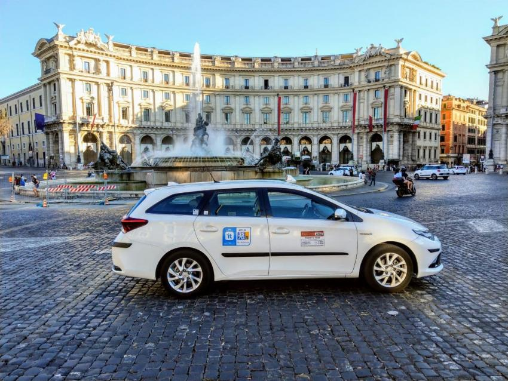

イタリアにある詐欺
スリ
イタリアでは観光客を狙った詐欺が他の国よりも多い傾向がありますので、
注意が必要です。特に夏場は観光地が非常に混雑します。
現金は2～3箇所に分けて持ち、貴重品は少なくし、フラップが閉まるクロスボディのスリングバッグを使用することをお勧めします。
地下鉄を利用する際には、バックパックを前に持って移動することも重要です。
また、ローマの64番バスは主要な観光名所を巡回するため、観光客にとって便利な交通手段として知られています。
デザイナーズ・コート
イタリア（またはフランス）で起こりがちな詐欺の一例です。この詐欺では、身なりのいい男性が車の外に立っており、
ある場所への行き方などに困っているように見えます。
彼は偶然あなたが探している場所を知っているかのように振る舞い、
自分が有名なファッションブランド（例えばグッチ）で働いていると主張します。
そして、あなたのために提供したい高価なコートを持っていると言いますが、ガソリン代だけを支払ってもらえればと言います。
バラとブレスレット
この手法では、無邪気そうな女性が1人または2人であなたの彼女にバラを渡しにやってきます。彼女がそれを受け取ると、お金を要求されますが、
金額は少額なのでその場で値切ろうとはしないでしょう。
別の手法は、誰かがあなたの手にフレンドシップバンドやブレスレットを結びつけて、
外すのが非常に難しいようにします。その後、お金を要求されることがあります。
中には無料でバンドを巻いてくれる人もいますが、別の人が同じようなことをする可能性もあります。しかし、彼らは高額な金額を要求してくるかもしれません。
何度でも繰り返しますが、タダでも何でも受け取らず、恥ずかしがらずにNOと言ってください！

タクシーの詐欺
最も簡単で無防備な被害は、タクシー運転手が観光客を乗せて、過剰な料金を請求することです。
これを避けるためには、タクシー乗り場やアプリを利用してタクシーに乗ることが重要です。運転席の後ろに掲示されている料金表で、すべてのルートと観光地の料金を確認してください。
事前に料金を確認したり、メーター制を利用することをお勧めします。